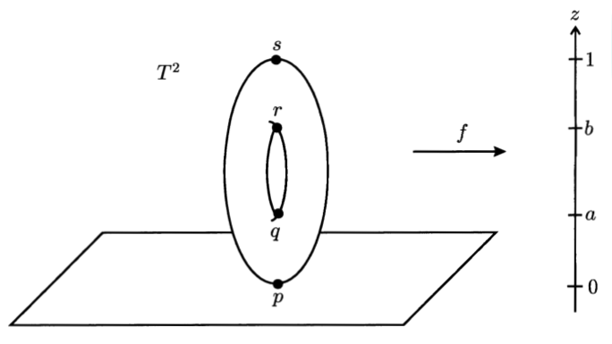

Project Results
This section presents the results of our summer research.
Topological Structure
We explored how graphs encode shape and structure through tools like the Euler characteristic and the even and odd Laplacians, and connected these ideas to discrete Morse theory, which provides a framework for simplifying complex spaces while preserving their topological features.
See Key Results
-
Euler Characteristic: The Euler characteristic is a key topological invariant of a graph, defined as
\( \chi(\Gamma) = |V| - |E| \). It can also be expressed using Betti numbers as
\( \chi = b_0 - b_1 \), where:
- \( b_0 \) is the number of connected components: how many separate pieces the graph consists of.
- \( b_1 \) is the number of independent cycles: the number of loops in a graph that cannot be broken down into others.
- Gluing Formula: When graphs \( \Gamma_1 \) and \( \Gamma_2 \) are joined along a shared subgraph \( B \), we proved the identity: \[\chi(\Gamma_1 \cup \Gamma_2) = \chi(\Gamma_1) + \chi(\Gamma_2) - \chi(B)\]
-
Even and Odd Laplacians:
- The even Laplacian \( \Delta_+ = II^\top \) acts on vertices.
- The odd Laplacian \( \Delta_- = I^\top I \) acts on edges.
This means that the Laplacians’ null spaces capture key topological features of the graph, the Betti numbers!
Importantly, the even and odd Laplacians share the same positive eigenvalues. The only differences occur in the zero eigenvalues, which reflect the Betti numbers \( b_0 \) and \( b_1 \).
In physics, this pairing is seen as a connection between bosonic (vertex) and fermionic (edge) particles, a key concept in supersymmetry.
-
Morse Inequalities and Discrete Morse Theory:
-
Morse Inequalities:
The Morse inequalities relate the Betti numbers \( b_0 \) and \( b_1 \), which measure topological features of a graph, to the critical points of a Morse function defined on the graph.
For graphs, the inequalities are:
\( b_0 \leq C_0, \quad b_1 \leq C_1 \)
and
\( b_0 - b_1 = C_0 - C_1 = \chi(\Gamma) \)
where:
- \( C_0 \) is the number of critical points of index 0
- \( C_1 \) is the number of critical points of index 1.
- Index = number of downward directions at a critical point.
Discrete Morse theory uses functions on vertices and edges to identify critical points and their indices in order to study their underlying topological structure.
Example: Height functions on \(C_4\)
-
Perfect height function:
We observe that there is one critical vertex (minimum) and one critical edge (maximum), thus:
\( C_0 = 1 \), \( C_1 = 1 \), with matching Betti numbers \( b_0 = 1 \), \( b_1 = 1 \). So the conditions to be "perfect" are satisfied. -
Imperfect height function:
We observe that every vertex and every edge is a critical point. So,
\( C_0 = 4 \), \( C_1 = 4 \). But \( b_0 = 1 \), \( b_1 = 1 \), so this function is not perfect.
-
Morse Inequalities:
Graph Entropy Analysis
We used von Neumann entropy to measure and compare the entropy of graphs and studied its behavior under gluing and disjoint union.
See Key Results
- Von Neumann Entropy: Defined entropy as \[ S(\Gamma) = \sum_{i} \lambda_i \ln \lambda_i, \] where \( \lambda_i \) are the nonzero eigenvalues of the Laplacian.
- Graph Family Comparisons: Computed and compared entropy for key graph types: path, tree, cycle, star, lattice, torus, complete bipartite, and complete graphs. We found that entropy increases with size and symmetry; that is, complete graphs have higher entropy than trees or paths.
- Entropy Additivity: Verified that entropy is additive under disjoint unions: \[ S(\Gamma_1 \cup \Gamma_2) = S(\Gamma_1) + S(\Gamma_2), \] and used this to compare composite and individual systems.
-
Gluing and Entropy: Explored entropy behavior under gluing via two methods:
- Bridge Gluing: Connecting two graphs by adding an edge between selected vertices
- Interface Gluing: Identifying a shared subgraph between two graphs
- Glued Torus Analysis: Analyzed the entropy and spectrum of the torus graph under gluing. (ADD MORE HERE)
Spectral Graph Theory
Can you hear the shape of a drum? This famous question by mathematician Mark Kac asks whether the sound of a drum's surface can reveal its shape. Spectral graph theory applies this idea to graphs: can the eigenvalues of a graph’s Laplacian matrix tell us what the graph looks like? By examining the eigenvalues of matrices like the adjacency or Laplacian, we can uncover important structural and topological properties of the graph.
See Key Results
- Isospectral Graphs: Different graphs can share the same eigenvalues (be isospectral), which means the answer to the big question, whether the spectrum alone determines a graph’s structure, is no. This is fascinating because it shows that graphs with different structures can have identical spectral properties. For example, such graphs have the same von Neumann entropy (they are isoentropic), since it depends solely on eigenvalues. Although isospectral graphs can be challenging to find, explicit examples do exist, confirming that the spectrum alone cannot tell us what a graph looks like.
- Fiedler Value and Connectivity: The second-smallest Laplacian eigenvalue (Fiedler value) measures connectivity: higher values indicate better-connected graphs, while zero means the graph has disconnected components. This is crucial in spectral graph theory because it connects the graph’s algebraic properties (its eigenvalues) directly to its structure, allowing us to analyze connectivity, identify clusters, and assess network robustness using only the spectrum of the Laplacian.
-
Graph Rewiring: Graph rewiring is the process of changing which vertices are connected by edges without adding or removing anything; you simply change which vertices each edge connects, altering the graph’s structure while keeping the total number of vertices and edges the same. This lets us explore how changes in connectivity affect the graph’s spectral properties without changing fundamental topological features like the Betti numbers.
In spectral graph theory, this is important because:
- It allows us to examine how rearranging edges influences the graph’s spectrum, revealing how eigenvalues respond to changes in wiring rather than just the overall shape.
- It plays a key role in uncovering isospectral graphs.
- It helps identify which spectral properties stay consistent despite rewiring, which is useful for analyzing network resilience.
Computing the Characteristic Polynomial of Glued Graphs:
When two graphs \(\Gamma_1\) and \(\Gamma_2\) are joined along a shared subgraph \(I\), we can find the characteristic polynomial \(E(\Gamma)\) of the combined graph \(\Gamma\) using the formula:
\[
E(\Gamma) = \frac{E(\Gamma_1) \cdot E(\Gamma_2)}{E(I)}
\]
The roots of the characteristic polynomial are the eigenvalues of the graph’s Laplacian. This formula lets us efficiently compute the new characteristic polynomial, and thus the eigenvalues, of the larger graph by combining those of the smaller parts, avoiding direct calculation from scratch.
Network Theory
We analyzed the structure of networks, focusing on small-world behavior, clustering, bottlenecks, and connectivity.
See Key Results
- Characteristic Path Length: Computed the average shortest path length between all pairs of vertices: \[ L(\Gamma) = \frac{1}{\binom{n}{2}} \sum_{v,w \in V} d(v, w) \] showing that longer paths correlate with lower entropy and slower information diffusion.
-
Clustering Coefficient: Measures how densely connected a vertex’s neighborhood is.
- Local clustering coefficient of a vertex \( v \) is defined as: \[ cc(v) = \frac{|E(\langle N[v] \rangle)|}{|E(K_{\deg(v)+1})|} \] where \( N[v] \) is the closed neighborhood of \( v \), and the denominator is the number of edges in the complete graph on \( \deg(v) + 1 \) vertices.
- Average clustering coefficient of the graph \( \Gamma \) is the average of all clustering coefficients: \[ cc(\Gamma) = \frac{1}{n} \sum_{v \in V} cc(v) \]
- ω-Index: Used the ω-index to classify small-world networks and position them along a spectrum between random-like and lattice-like structures: \[ \omega = \frac{L_{\text{rand}}}{L} - \frac{C}{C_{\text{latt}}} \] where \( L \) is the characteristic path length and \( C \) is the clustering coefficient. Values near 0 indicate small-world behavior.
-
Fiedler Value and Cheeger Constant: Indicators of connectivity and bottlenecks:
- Fiedler Value: The second-smallest eigenvalue of the Laplacian, indicating algebraic connectivity. Low values signify weak connections.
- Cheeger Constant: A numerical measure of whether or not a graph has a bottleneck. A lower Cheeger constant implies a more bottlenecked graph, meaning you can disconnect it by removing a small number of edges or vertices.
- Entropy Connection: Observed that high clustering and regular structure correlate with lower entropy, while shorter path lengths and randomness graphs exhibited higher entropy.
Future Directions
Future research will extend this work to deepen our understanding of graph entropy and broaden its applicability.
Possible Next Steps
- Analyze how entropy can be quantified via the number of possible walks on a graph: This approach links combinatorial paths to spectral theory, offering an intuitive perspective on network complexity and information diffusion.
- Develop a general gluing formula for graphs: Enabling us to break down large real-world networks into manageable components. This would make it easier to compute overall entropy by combining smaller pieces, offering a scalable approach to analyzing complex systems.
- Explore connections with small-world networks: Found in systems like neural networks, power grids, food webs, and social media platforms. Their combination of local clustering and short global paths makes them efficient and robust, forming an important class of real-world networks where studying entropy is especially meaningful.
- Extend this work to include computations using a weighted Laplacian: In many real-world networks, edges carry weights that represent characteristics like strength or distance. Incorporating these weights into the Laplacian allows us to model networks more accurately, making entropy analysis more realistic and meaningful.
- Expand the framework to consider higher dimensions: By moving beyond pairwise connections to structures involving groups of nodes, we can capture more complex relationships and topological features, providing deeper insights into network complexity.